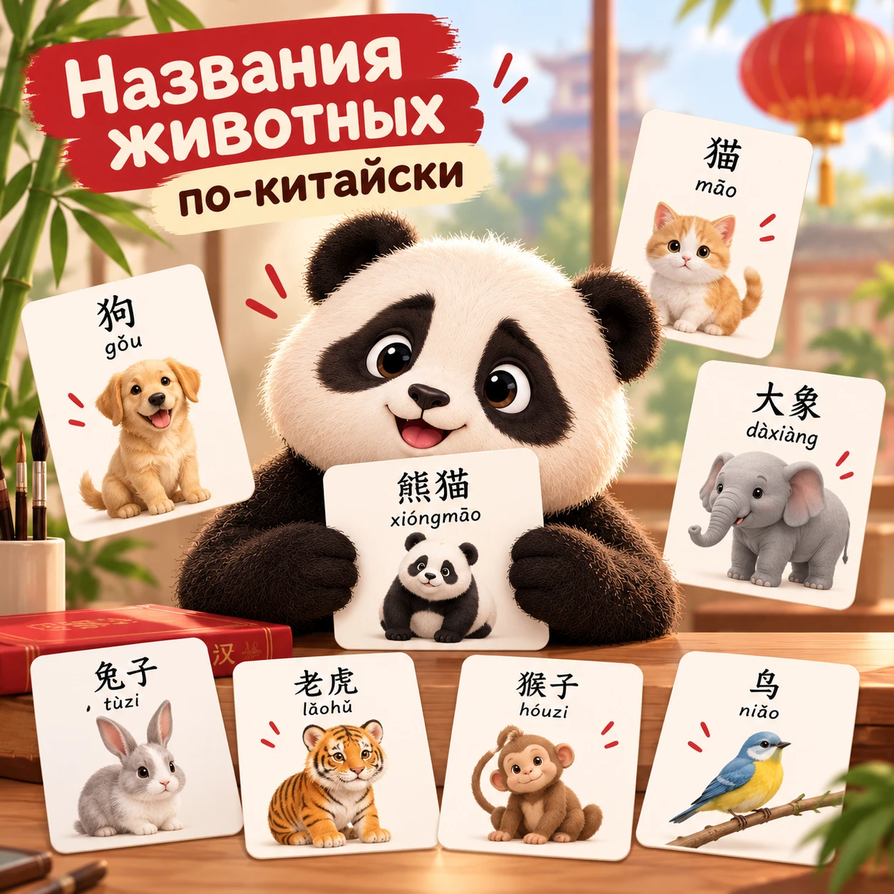
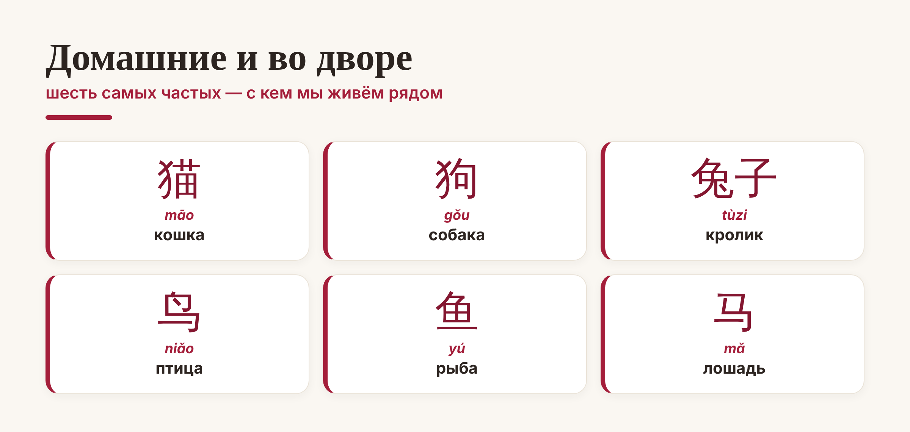
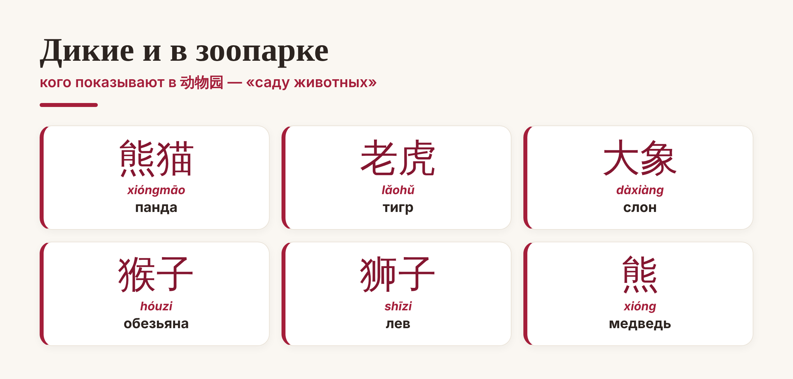

Китай · язык

Животные — одна из самых приятных тем для старта: слова короткие, запоминаются легко, а детям и взрослым одинаково весело. Само слово «животное» — 动物 (dòngwù), а зоопарк — 动物园 (dòngwùyuán), «сад животных». Соберём названия животных по-китайски: сначала домашних, потом диких, и узнаем пару забавных фактов.
Начнём с тех, кто рядом. Эти названия животных на китайском вы будете встречать чаще всего:

Обратите внимание на маленькую деталь: у некоторых животных к слову добавляется 子 (zi) — 兔子 (tùzi) «кролик», как и 猴子 (hóuzi) «обезьяна». Это частый суффикс, который делает слово «законченным». А «кошка» 猫 (māo) звучит почти как наше «мяу» — такие слова запоминаются сами.
Теперь те, кого показывают в 动物园. Среди них — главный символ Китая:

Самое интересное слово здесь — панда. По-китайски она 熊猫 (xióngmāo), а это буквально «медведь-кошка»: 熊 (xióng) «медведь» плюс 猫 (māo) «кошка». Очень точное описание, если присмотреться! Панду в Китае обожают и называют 国宝 (guóbǎo) — «национальное сокровище».
И немного приятных мелочей, которые делают тему живее:
Многие животные — из зодиака. Крыса, бык, тигр, кролик, лошадь, обезьяна — всё это ещё и знаки китайского гороскопа. Выучили животных — считайте, наполовину знаете восточный зодиак.
Слова-кирпичики. Из знакомых иероглифов часто собираются новые: 大象 (dàxiàng) «слон» — это 大 «большой» плюс 象 «слон», а 老虎 (lǎohǔ) «тигр» начинается с 老, как во многих названиях зверей.
Как учить. Животные идеальны для карточек: иероглиф с одной стороны, картинка с другой. Развесьте их дома или заведите колоду — и несколько слов в день осядут сами собой. А дальше можно переходить к целым фразам.
Вот и весь мини-зоопарк: названия животных по-китайски — простая и весёлая тема, с которой приятно начинать язык. Выучите этих — и мир вокруг заговорит на китайском чуть понятнее.
Весёлой вам учёбы! 熊猫最可爱。